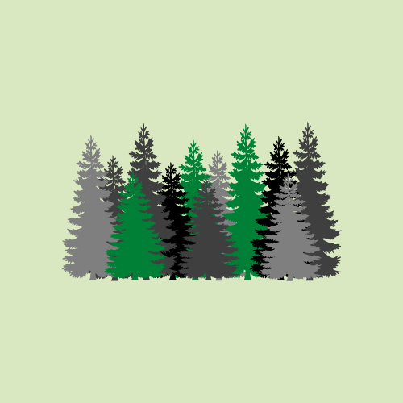

“Power of a Spaling”

What do we mean by “Power of a Spaling”?
Unlike the 2021 Academy Award nominated Movie (Power of the Dog), Just as we humans are comprised of many parts functioning together allowing us to do wondrous things, the anatomy of a tree is just as wondrous, empowering them with super hero qualities. A tree has the ability to provide an essential of life for all living things on our planet – oxygen, and the power to remove harmful gases like carbon dioxide making the air we breathe healthier.
Here is how it works:
To keep it simple a tree is comprised of its leaves, stems, trunk and its roots. When you look at a tree, note that about five percent of the tree is comprised of its leaves, 15 percent its stems, 60 percent goes into its trunk and 20 percent is devoted to its roots. Here is the super hero part, Through a process called photosynthesis, leaves pull in carbon dioxide and water and use the energy of the sun to convert this into chemical compounds such as sugars that feed the tree. But as a by-product of that chemical reaction oxygen is produced and released by the tree. It is proposed that one large tree can provide a day’s supply of oxygen for up to four people. Trees also store carbon dioxide in their fibers helping to clean the air and reduce the negative effects that this CO2 could have had on our environment. According to the Arbor Day Foundation, in one year a mature tree will absorb more than 48 pounds of carbon dioxide from the atmosphere and release oxygen in exchange.
What does Give Nature+ do?
What do we do?
Give Nature+ is just a way to tell you what you need to know but you arent knowing, be honest to yourself did you know that one year a mature tree will absorb more than 48 pounds of carbon dioxide from the atmosphere... To be honest I didnt, until I started researching for my blog... This is what we want to do, to tell you everything that you need to know.
The natural world is an incredible wonder that inspires us all. It underpins our economy, our society, indeed our very existence. Our forests, rivers, oceans and soils provide us with the food we eat, the air we breathe, the water we irrigate our crops with. We also rely on them for numerous other goods and services we depend on for our health, happiness and prosperity.
These natural assets are often called the world's 'natural capital'. These benefits are also hugely important to the economy – from farming and forestry to leisure and tourism. If you add them all up, the total value of these benefits is phenomenal – at least US$125 trillion every year.
Because nature is free, we often take it for granted and overexploit it. We clear forests, overfish oceans, pollute rivers and build over wetlands without taking account of the impact this will have. By not taking into account the benefits we get from nature, we create huge social and economic costs for ourselves.
We need to look at the value of nature in economic and social terms to help us better understand the full implications of the choices we make. Instead of making decisions based on short-term financial interests, we can look at the longer-term benefits for people and the economy – and of course nature itself. Using this argument, we’re persuading governments and businesses to take better care of the natural world, so that it can continue to sustain us all into the future.
How do we give the nature something in return?
How Can We Give Back to Our Mother Earth?
How Can We Give Back to Our Mother Earth?
Sentimentally, people celebrate and organize some thanksgiving events for several people and things as well. Don’t you think that the entire human community should organize a thanks-giving session for Mother Nature? The Entire planet is in desperate need of healing. Like all the special days, there is also the “Earth Day”, which is celebrated on the 22nd of April every year. However, what is your participation or contribution to Mother Nature or the planet? Yes! You need to think of it at least on this special day for the earth. Here are some ideas that you can do for the earth.
Reduce the usage of the non-renewable form of energy
Some non-renewable sources of energy are in use in society for regular purposes. For example, petroleum that is used for vehicles is non-renewable. You might see lots of people living in different vehicles even for some unnecessary work. When you need to go to the nearby shops you walk or try to move with bicycles. If you and your neighbor are working in the adjacent buildings, share your vehicles. This will help in improving your health, economic conditions, and help mother nature as well.
Go for organic products
As the food chain is already disturbed, several birds that will eat the insects that will spoil the crops are already in the list of endangered species. So, several new chemicals are preferred by the farmers, which is dangerous for the soil and for the people who are consuming it. So, there are lots of manure that can be easily prepared by yourself, try to know about it and employ them on your farms.
Encourage afforestation and avoid deforestation
Actually, nature is already strong enough that people need to do it, allowing it to be as it is. All the people need to do is stop cutting down the trees and destroying the forest as you are destroying the wealth of it. Instead, you can involve in planting some trees in your home. There are lots of trees that will be more beneficial for society and you. Look for such trees and plant them in your home. Besides, there are also some indoor plants that require less maintenance and no sunlight. Planting such indoor plants will help you in enhancing the quality of the room and it is also the decorative component in the home.
Gift the plants and encourage others for preserving nature!
When you need to bring out the best change, it is not enough only when you alone do it. You should also encourage others to do it. Some people will do it when you are encouraging them through the words. However, most people do not like to get any advice. So, one best way is to present these best plants on any special occasion.
Employ the best waste management system
When people need to enjoy the best and luxurious life, several industries have to be functioning. Here, the wastes are more common. However, these wastes have to be treated. When the raw waste without treating is left into the water bodies and air, it will affect the entire earth in several ways. There are different ways where you can treat this waste. For example, remove all the poisonous particles in the water and let it into the water bodies, when the chimneys rise high and the poisonous gas will not spread in the layer where the living being breathes. Recently, all the non-bio-compostable products are used for laying the road. Such measures can be taken.
Go back to the Website